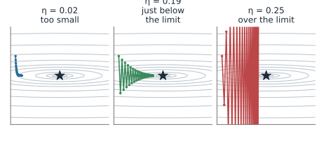
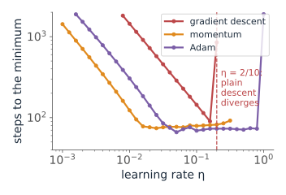
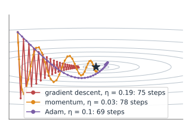
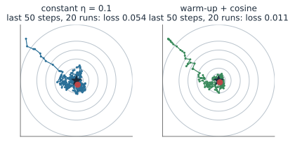
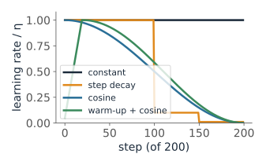

Optimisers and learning rates
About this lecture
The backpropagation unit gave every weight its gradient and took plain steps downhill, with momentum as a first look. Real networks are trained with better step rules. This unit:
- why one learning rate is awkward: steep and flat directions at once;
- momentum (a heavy ball) and Adam (a step size for every weight);
- saddles, flat regions and noisy mini-batch gradients;
- learning-rate schedules: warm-up, step decay, cosine decay.
Slides titled The math give the formulas and proofs; the ideas are complete without them.
Builds on: Day 36: Neural networks.
One learning rate, three outcomes
A long valley: the loss 0.1a^2 + 5b^2 over two weights. Across the valley it is 50 times steeper than along it.
- \eta = 0.02: safe, but it crawls along the floor.
- \eta = 0.19: zig-zags across, but gets there (75 steps).
- \eta = 0.25: every step across overshoots more: it diverges.
The steep direction sets the limit, the flat direction sets the time.

How many steps does each learning rate need?
Steps until the loss stays within 0.001 of the minimum, on the long valley:
- Plain descent: best just below \eta = 0.2 (75 steps), then a cliff: it diverges.
- Momentum and Adam: under 100 steps over a wide range of \eta (momentum from 0.015 to 0.3, Adam from 0.03 to 0.8).
A good optimiser is not only faster: it is forgiving about \eta, which we never know in advance.

The math: why the steep direction sets the limit
Near a minimum the loss is a bowl, \mathcal L(\mathbf w) \approx \tfrac12(\mathbf w - \mathbf w^*)^\top H(\mathbf w - \mathbf w^*), with curvatures \lambda_i (eigenvalues of the Hessian H). Plain descent acts on each eigendirection separately:
e_i \leftarrow (1 - \eta\lambda_i)\,e_i
- Stable only if |1 - \eta\lambda_i| < 1 for all i: \eta < 2/\lambda_{\max}. Valley: \lambda = 0.2 and 10, so \eta < 0.2.
- For \eta\lambda_i > 1 the sign flips each step: the zig-zag.
- The flat direction shrinks by 1 - \eta\lambda_{\min} per step: about 1/(\eta\lambda_{\min}) steps. At the limit \eta \approx 2/\lambda_{\max} that is \lambda_{\max}/2\lambda_{\min} = the condition number over 2 (here 25 steps per factor e).
Momentum: a heavy ball
Keep a velocity: each step adds the new gradient to 90 % of the old velocity, then moves along the velocity.
- Along the valley the gradients agree: the velocity builds up to 10 × one gradient.
- Across the valley they alternate: they cancel.
- So momentum speeds up the flat direction without making the steep one unstable.
The path overshoots and swings back (orange), like a ball rolling in a bowl.

Adam: a step size for every weight
Adam keeps two running averages for each weight: of its gradient (m) and of its gradient squared (v). The step is
\Delta w = -\eta\,\frac{m}{\sqrt v}
- A weight whose gradients are large and steady: m/\sqrt v \approx \pm 1, step \approx \eta.
- A weight with tiny gradients gets the same step size \eta: flat directions are not neglected.
- Gradients that flip sign: m averages out, the step shrinks.
Adam is momentum plus a per-weight rescaling. It is the default for training networks.
| step of each weight | |
|---|---|
| plain descent | \eta \times gradient |
| momentum | \eta \times velocity |
| Adam | \eta \times (about \pm 1) |
On the long valley the gradient along b starts 22 times larger than along a. Plain descent moves b 22 times further; Adam moves both by \eta: its first step is exactly (+0.1, -0.1) for \eta = 0.1, a diagonal (purple path on the last slide).
The math: momentum and Adam
Gradient \mathbf g_t at step t; all operations per weight.
- Momentum: \mathbf v_t = \beta\mathbf v_{t-1} + \mathbf g_t, \ \mathbf w_t = \mathbf w_{t-1} - \eta\mathbf v_t. For a constant gradient, \mathbf v_t \to \mathbf g/(1 - \beta): with \beta = 0.9 the effective step is 10\eta.
- Adam (Kingma and Ba, 2015), \beta_1 = 0.9, \beta_2 = 0.999, \epsilon = 10^{-8}:
\mathbf m_t = \beta_1\mathbf m_{t-1} + (1 - \beta_1)\mathbf g_t, \qquad \mathbf v_t = \beta_2\mathbf v_{t-1} + (1 - \beta_2)\mathbf g_t^2 \hat{\mathbf m}_t = \frac{\mathbf m_t}{1 - \beta_1^t}, \qquad \hat{\mathbf v}_t = \frac{\mathbf v_t}{1 - \beta_2^t}, \qquad \mathbf w_t = \mathbf w_{t-1} - \eta\,\frac{\hat{\mathbf m}_t}{\sqrt{\hat{\mathbf v}_t} + \epsilon}
- AdamW: weight decay applied directly, \mathbf w \leftarrow \mathbf w - \eta\lambda\mathbf w, not through \mathbf g (otherwise Adam’s rescaling weakens it for weights with large gradients).
The math: why Adam’s step is about scale-free, and bias correction
- Multiply the loss by c > 0: every gradient becomes c\mathbf g, so \mathbf m \to c\mathbf m, \sqrt{\mathbf v} \to c\sqrt{\mathbf v}, and \hat{\mathbf m}/\sqrt{\hat{\mathbf v}} is unchanged (up to \epsilon). Plain descent’s step is multiplied by c. Demo: the valley with the loss × 100: Adam still 69 steps, plain descent and momentum diverge.
- When a weight’s gradient is steady, \hat m \approx g and \sqrt{\hat v} \approx |g|: it moves by about \eta per step, whatever the size of g. So \eta is a distance in weight space, not a multiplier of the gradient.
- Bias correction: \mathbf m and \mathbf v start at 0, so early on they are too small: m_1 = 0.1\,g_1, v_1 = 0.001\,g_1^2, and m_1/\sqrt{v_1} = 0.1/\sqrt{0.001} = 3.16. Dividing by 1 - \beta^t makes \hat m_1 = g_1, \hat v_1 = g_1^2: the first step is exactly \eta. Without the correction the first steps are 3–5 times too long.
Try it: the optimiser race
Saddles and flat regions
At a saddle the loss curves up in one direction and down in another; the gradient is almost zero there. In networks with millions of weights, most points with zero gradient are saddles, not minima.
- Started 0.001 off the saddle, plain descent (\eta = 0.03) needs 278 steps to roll off; within 200 steps it is still stuck (red).
- Momentum (92 steps) and Adam (97) leave much sooner: the velocity builds up; Adam does not care how small the gradient is.
- Mini-batch noise also kicks the weights off a saddle.

Noisy gradients from mini-batches
The gradient of a mini-batch is a noisy estimate of the full one (the backprop unit). Here: a round bowl, with noise of size 1 added to every gradient.
- With a constant \eta the weights reach the minimum fast but keep jiggling around it: the loss stays at about 0.054 (last 50 of 200 steps, mean of 20 runs).
- Lowering \eta at the end (cosine decay) lets them settle: about 0.011, five times lower.
The same for momentum and Adam. Large steps early, small steps late: a schedule.

Learning-rate schedules
The learning rate as a function of the step, as a share of the largest \eta:
- Step decay: divide by 10 at fixed points (here at 50 % and 75 % of the training).
- Cosine decay: a smooth half cosine from \eta to 0.
- Warm-up: start small and grow linearly over the first steps (here 10 %), then decay.
Why warm-up? At the start the weights are random and Adam’s running averages are still poor estimates; large early steps can throw the network into a bad region (dead units, saturated layers) it never leaves.

Adam as pseudocode
m = 0, v = 0 for every weight; t = 0
for each mini-batch:
g = gradient of the batch loss (backpropagation)
t = t + 1
eta_t = schedule(t) # warm-up, then decay
for every weight w (with its own m, v):
m = 0.9 · m + 0.1 · g
v = 0.999 · v + 0.001 · g²
m_hat = m / (1 − 0.9^t), v_hat = v / (1 − 0.999^t)
w = w − eta_t · m_hat / (sqrt(v_hat) + 1e-8)- Two numbers of memory per weight, a few operations per weight per step: cheap next to backpropagation.
Which optimiser, in practice?
| when | |
|---|---|
| Adam / AdamW, \eta \approx 10^{-3}–10^{-4} | the default: works for most networks with little tuning; transformers |
| SGD + momentum 0.9, \eta \approx 0.01–0.1 | convolutional networks for classification; often slightly better test results, needs a tuned schedule |
| warm-up for the first 1–5 % | large networks, large batches, Adam |
| cosine or step decay to the end | almost always |
- Larger mini-batches give less noisy gradients and allow a larger \eta (roughly in proportion, up to a point).
- Try a few learning rates a factor 3–10 apart on a short run first; reading the curves tells you which.
Summary
| Idea | In one line |
|---|---|
| Learning rate | the steepest direction limits it (\eta < 2/\lambda_{\max}); the flattest sets the time |
| Momentum | a velocity that adds up agreeing gradients and cancels alternating ones |
| Adam | per-weight steps of about \eta: gradient average / root of squared-gradient average |
| Scale-free | Adam’s step does not change when the loss is multiplied by a constant |
| Bias correction | divide the running averages by 1 - \beta^t, so the first steps are not too long |
| Saddles | near-zero gradients; momentum, Adam and noise get away faster |
| Schedules | warm-up at the start, decay at the end: settle instead of jiggle |
Next: why deep stacks of layers are hard to train at all, and the normalisation layers and residual connections that fix it.